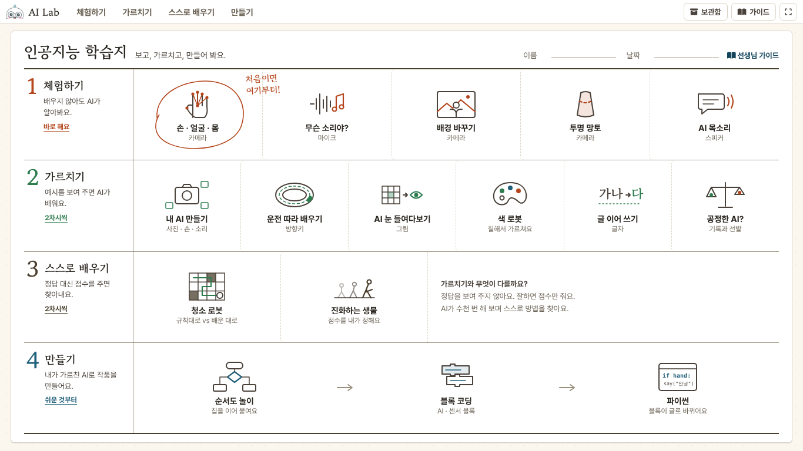
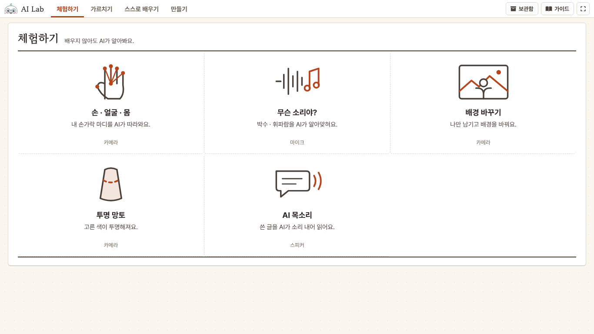
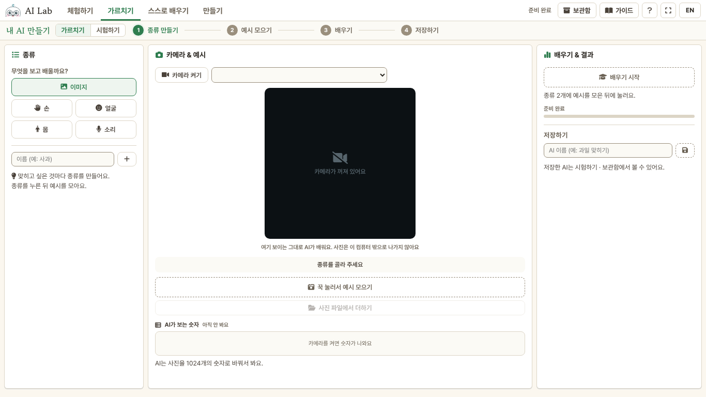
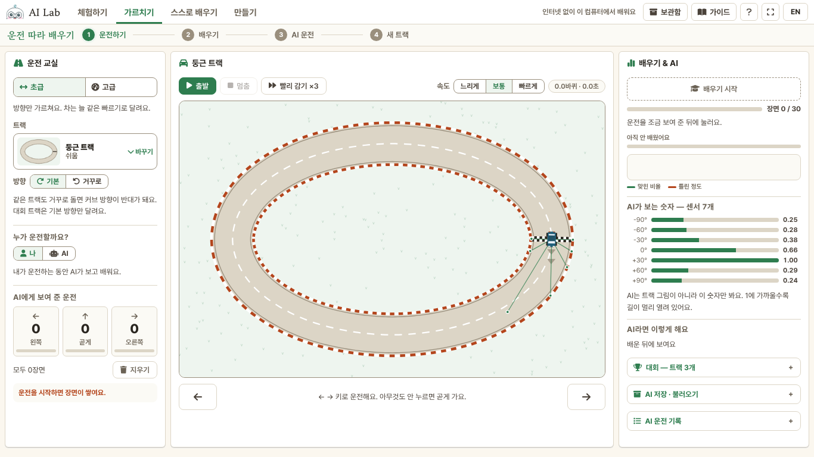
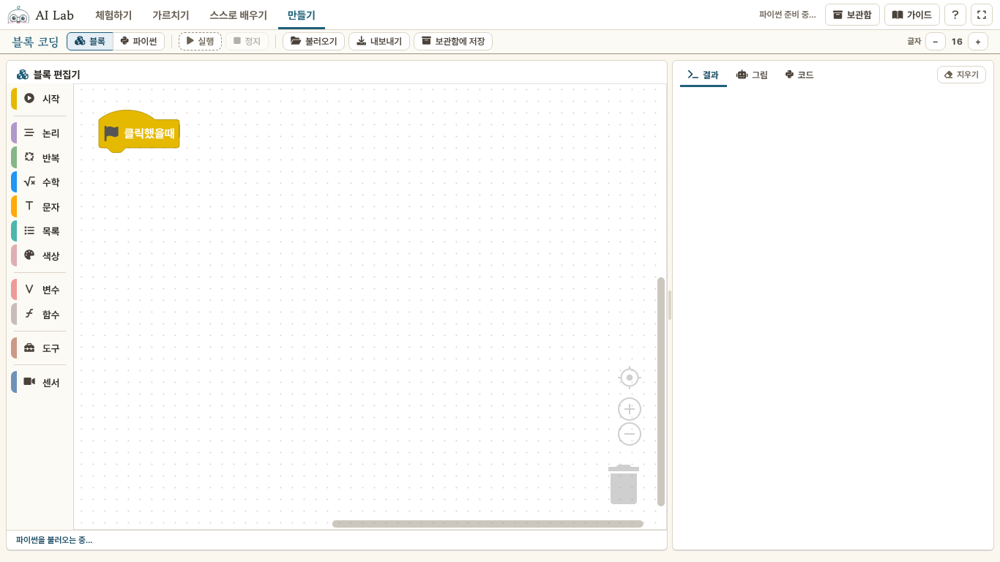
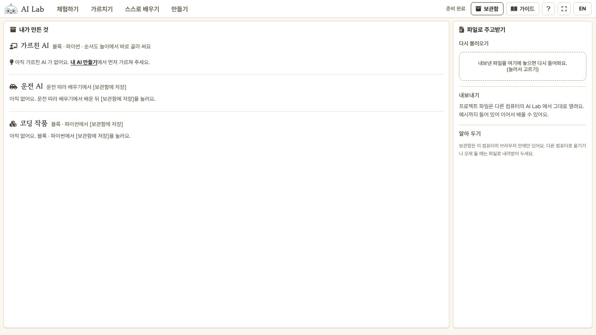

AI Lab 사용 가이드
선생님용 · 보고, 가르치고, 만들어 보는 인공지능 학습지
AI Lab 은 초등학생이 인공지능을 보고, 가르치고, 만들어 보는 웹 도구예요. 주소 하나로 열리고, 설치 · 가입 · 요금이 없어요. 첫 화면 열기

1수업 전에 준비할 것
| 항목 | 내용 |
|---|---|
| 브라우저 | 크롬 · 엣지 (최신). 아이패드는 iPadOS 16.4 이상 |
| 인터넷 | 처음 열 때만 필요해요. 한 번 연 활동은 다음부터 빨리 열려요 |
| 카메라 · 마이크 | 손 · 얼굴 · 몸 · 소리를 쓰는 활동에만. 없어도 되는 활동이 대부분이에요 |
| 스피커 | AI 목소리 · 말하기 블록을 쓸 때. 기기 안 목소리가 있어야 해요 (9장) |
| 모둠 | 2~3명이 PC 한 대 — 조작 · 기록 · 발표를 돌아가며 |
수업 전 확인 (5분)
- 학생 PC 에서 AI Lab 이 열리는지
- 카메라를 쓰는 날이면: 체험하기 → 손 · 얼굴 · 몸 → 카메라 켜기 → 브라우저가 물으면 허용
- 소리를 쓰는 날이면: 체험하기 → AI 목소리 → 읽어 줘요 를 눌러 소리가 나는지
- 처음 여는 활동은 파일을 받느라 몇 초~수십 초 걸려요 (손 인식 약 20MB · 파이썬 약 13MB). 수업 전에 한 번 열어 두면 빨라요
개인정보 — 사진 · 영상 · 소리 · 글은 학생 기기 밖으로 나가지 않아요. 학습과 계산이 모두 브라우저 안에서 이뤄지고, 서버로 보내는 데이터가 없어요. 목소리도 기기 안 목소리만 써요.
2화면 읽는 법
상단바 — 어느 화면에서나 같아요
| 자리 | 하는 일 |
|---|---|
| 파이보 · AI Lab | 누르면 첫 화면(학습지)으로 |
| 메뉴 넷 | 체험하기 · 가르치기 · 스스로 배우기 · 만들기. 지금 메뉴는 색 밑줄로 불이 켜져요 (빨강 · 초록 · 갈색 · 남색) |
| 상태 글 | 예: "인터넷 없이 이 컴퓨터에서 배워요", "파이썬 준비 중…" |
| 보관함 | 가르친 AI · 운전 AI · 코딩 작품을 모아 보는 곳 |
| 가이드 | 이 안내 페이지 |
| ? | 그 화면의 안내(파이보 말풍선 · 도움말)를 다시 봐요 |
| EN / 한 | 영어 화면 ↔ 한국어 화면 |
| 전체화면 |
화면을 아래로 내려도 상단바는 맨 위에 남아요.
첫 화면 · 메뉴 화면
- 첫 화면은 학습지 한 장이에요. 1 체험하기 → 2 가르치기 → 3 스스로 배우기 → 4 만들기 순서로 놓여 있고, 그림을 누르면 그 활동이 열려요. 빨간 펜 "처음이면 여기부터!"가 첫 활동을 짚어요.
- 메뉴 화면(상단바 메뉴를 누르면)은 그 메뉴의 활동 카드를 한 줄 설명과 함께 보여 줘요.

활동 화면
- 상단바 아래 줄 맨 앞에 활동 이름, 옆에 단계(1 · 2 · 3 …)가 있어요. 지금 단계에 불이 켜져요. 활동 이름을 누르면 메뉴 화면으로 돌아가요.
- 화면은 왼쪽(준비) · 가운데(보기 · 하기) · 오른쪽(배우기 · 결과) 세 칸이에요.
- 아직 누를 수 없는 주 단추는 점선으로 보여요 (예: 장면이 모자랄 때의 "배우기 시작").
- 빨간 손글씨 메모는 지금 해 볼 것을 알려 주는 안내예요.
3체험하기 배우지 않아도 AI 가 알아봐요
수업 시작 5~10분 놀이로 좋아요.
| 활동 | 하는 것 | 준비물 |
|---|---|---|
| 손 · 얼굴 · 몸 | 카메라 앞의 손가락 마디 · 얼굴 · 몸을 AI 가 점과 선으로 따라와요. 왼쪽 카드로 손 · 얼굴 · 몸을 켜고 꺼요 | 카메라 |
| 무슨 소리야? | 박수 · 휘파람 · 말소리를 AI 가 알아맞혀요 | 마이크 |
| 배경 바꾸기 | 사람만 남기고 배경을 지우거나 흐리게 · 색으로 바꿔요 | 카메라 |
| 투명 망토 | 미리 칠해 둔 상태로 열려 망토가 바로 사라져요. 화분 · 셔츠처럼 비슷한 색은 AI 가 헷갈려요 → 칠하기로 더 가르쳐 보기 | 없음 (예시 사진) |
| AI 목소리 | 쓴 글을 AI 가 읽어요. 목소리 · 빠르기 · 높낮이를 바꾸고, 읽는 낱말에 밑줄이 따라가요 | 스피커 |
발문 예시 — "AI 는 손을 어떻게 알아볼까?" · "왜 화분도 사라졌을까?" · "'3:30' 은 어떻게 읽을까?"
4가르치기 예시를 보여 주면 AI 가 배워요
지도학습 활동이에요. 활동마다 2차시 안팎이에요.
내 AI 만들기 (사진 · 손 · 얼굴 · 몸 · 소리)

- 종류 만들기 — 왼쪽에서 무엇을 볼지 고르고(사진 · 손 · 얼굴 · 몸 · 소리), 맞힐 것마다 종류를 만들어요 (예: 가위 · 바위 · 보)
- 예시 모으기 — 종류를 누르고 가운데 꾹 눌러서 예시 모으기. 종류마다 비슷한 수로, 각도 · 거리를 바꿔 가며
- 배우기 — 오른쪽 배우기 시작. 맞힌 비율이 나와요
- 저장하기 — 이름을 붙여 저장하면 보관함에 들어가요
- 활동 이름 옆 [가르치기 | 시험하기]로 바로 시험해 봐요. 확신이 모자라면 "잘 모르겠어요" 라고 답해요.
- 저장한 AI 는 만들기(순서도 놀이 · 블록 · 파이썬)에서 바로 골라 써요 — 파일을 옮길 필요가 없어요.
운전 따라 배우기

내가 ← →로 운전하면, 차의 센서 숫자 7개와 내가 고른 방향을 AI 가 따라 배워요 (모방학습).
- 운전하기 — 처음에는 느리게, 구불구불한 트랙에서. 왼쪽 장면 수 카드가 쌓여요
- 배우기 — 장면이 30개를 넘으면 배우기 시작이 켜져요 (그 전에는 아래 막대가 "장면 n / 30")
- AI 운전 — "누가 운전할까요?"에서 AI로 바꾸고 출발
- 새 트랙 — 배운 적 없는 트랙에서도 되는지
- 한쪽 커브만 모이면 모자란 칸에 빨간 펜 동그라미와 "오른쪽 커브도 보여 줘요!"가 떠요 — 데이터 편향 이야기를 하기 좋은 장면이에요.
- 고급은 빠르기(가속 · 감속)까지 가르쳐요. 초급을 해 본 뒤에.
- 오른쪽 아래 접는 칸: 대회 — 트랙 3개(가르친 실력으로 겨루기) · AI 저장 · 불러오기 · AI 운전 기록
그 밖의 가르치기 활동
| 활동 | 단계 | 무엇을 배우나 |
|---|---|---|
| AI 눈 들여다보기 | 예시 모으기 → 배우기 → 들여다보기 → 속이기 | 그림 보는 신경망을 처음부터 만들고, 필터 · 특징 지도로 AI 가 무엇을 보는지 봐요. 예시 그림 넣기(○ △ ☆)로 카메라 없이도 돼요 |
| 색 로봇 | 칠해서 가르치기 → 색 지도 → 로봇 미션 | 색을 칠해 가르치면 AI 가 픽셀마다 골라요. 조명이 바뀌면 틀리고, 그 조명으로 더 가르치면 나아져요 |
| 글 이어 쓰기 | 글 넣기 → 배우기 → 이어 쓰기 → 들여다보기 | 가르친 글을 읽고 다음 글자를 맞히며 글을 이어 써요 (작은 언어모델) |
| 공정한 AI? | AI 만들기 → 공정한가? → 고치기 | 불공정한 작년 기록으로 배운 AI 가 실력이 같은 세 친구를 어떻게 고르는지 보고, 기록을 고쳐 봐요 |
5스스로 배우기 점수를 주면 AI 가 찾아내요
정답을 보여 주지 않고, 잘하면 점수만 줘요. AI 가 수천 번 해 보며 방법을 찾아요 (강화학습 · 진화).
| 활동 | 단계 | 하는 것 |
|---|---|---|
| 청소 로봇 | 규칙 청소기 → 배우는 청소기 → 센서 · 새 방 | 규칙대로 도는 청소기와 스스로 배운 청소기를 겨뤄요. 상과 벌점(먼지 · 한 걸음 · 벽)을 바꿔 연습하기 → 시합 |
| 진화하는 생물 | 진화시키기 → 상 바꾸기 → 새 땅 · 돌연변이 | 가상 생물이 세대를 거듭하며 걷는 법을 찾아요. 무엇에 점수를 줄지 내가 정해요 |
발문 예시 — "벽에 부딪혀도 벌점이 없으면 어떻게 될까?" · "멀리 가는 것만 점수로 주면 이상하게 걷지 않을까?"
6만들기 내가 가르친 AI 로 작품을
가르친 AI · 체험한 인식을 재료로 작품을 만들어요. 쉬운 것부터 세 단계예요.
① 순서도 놀이

- 왼쪽에서 볼 것(손 · 얼굴 · 몸 · 소리 · 내 AI)을 켜요.
- 오른쪽 규칙 놀이에서 규칙 만들기 → "만약 ○○ 하면 → AI 가 할 말". 칩을 골라 붙여요.
- 순서도로 보면 같은 규칙이 "시작 → 봐요 → ◇ 만약 ①? 예 → 말해요 / 아니오 ↓ …" 로 그려져요. 마름모를 누르면 조건을, 말풍선을 누르면 할 말을 바꿔요.
- 순서 놀이는 "①을 하고 → ②를 하고 → 성공!"처럼 차례대로 해내는 놀이예요.
- 목소리를 켜면 AI 가 소리 내어 말해요.
② 블록 코딩 · ③ 파이썬

- 도구 줄 [블록 | 파이썬]으로 오가요. 블록의 코드 탭에서 블록이 바뀐 파이썬을 볼 수 있어요.
- 실행 Ctrl + Enter · 정지 Esc · 바로 저장 Ctrl + S (작업은 자동으로도 저장돼요)
- 센서 분류: 손가락 수 · 손 위치 · 얼굴 · 머리 위로 든 손 · 소리 크기 · 박수
- 내 AI: 가르치기에서 저장한 AI 를 이름으로 골라요 (예: "내 AI [가위바위보] 가 본 것")
- AI 목소리로 말하기: 기기 안 목소리로 읽어요
- 파이썬에서는
import sensor후sensor.finger_count()·sensor.model("가위바위보")·sensor.say("안녕")처럼 써요. 예제에 "내 AI 로 말하기"가 있어요. - 오류가 나면 결과 칸에 쉬운 설명 한 줄이 먼저 나와요 (예: "4번째 줄: 값이 비어 있어요(None) …"). 그 아래 원래 오류도 그대로 있고, 파이썬 화면에서는 틀린 줄에 색이 칠해져요.
- 상단바 ?에 단축키 · 센서 · 저장 사용법이 있어요.
7보관함

| 종류 | 어디서 넣나 | 보관함에서 할 수 있는 것 |
|---|---|---|
| 가르친 AI | 내 AI 만들기 → 저장하기 | 시험하기 · 이어서 배우기 · 파일로 내보내기(.ailab.zip) · 이름 바꾸기 · 지우기 |
| 운전 AI | 운전 따라 배우기 → AI 저장 · 불러오기 → 보관함에 저장 | 열기 · 파일로 · 이름 바꾸기 · 지우기 |
| 코딩 작품 | 블록 · 파이썬 → 보관함에 저장 | 열기 · 파일로 · 이름 바꾸기 · 지우기 |
보관함은 그 컴퓨터의 그 브라우저 안에만 있어요. 다른 컴퓨터로 옮기거나 오래 둘 때는 파일로 내려받아 두세요. 브라우저 기록 · 사이트 데이터를 지우면 보관함도 지워져요.
옮긴 컴퓨터에서 다시 넣는 곳
- 가르친 AI(.ailab.zip): 보관함 오른쪽 다시 불러오기 칸에 놓기 (블록 · 파이썬의 불러오기로도 돼요)
- 운전 AI(.json): 운전 따라 배우기 → AI 저장 · 불러오기의 단추
- 코딩 작품(.json · .py): 블록 · 파이썬의 불러오기
8수업 흐름 예시 한 차시 40~45분
| 차시 | 흐름 |
|---|---|
| 1 | 체험하기(10분: 손 · 얼굴 · 몸, 무슨 소리야?) → 내 AI 만들기: 가위 · 바위 · 보 종류 만들기 · 예시 모으기 · 배우기 · 시험하기 · 저장 |
| 2 | 순서도 놀이: 저장한 가위바위보 AI 로 "가위면 → '가위!'라고 말하기" 규칙 3개 → 순서도로 보며 "위에서부터 차례로 묻는다" 이해 |
| 3 | 블록: 같은 놀이를 블록으로 — 내 AI 블록 + 조건 + AI 목소리로 말하기 → 코드 탭으로 파이썬 엿보기 |
| 4 | 운전 따라 배우기: 곧게만 가르치기 vs 골고루 가르치기 비교, 빨간 펜이 짚는 데이터 편향 |
| 5 | 청소 로봇: 상 · 벌점을 바꾸며 가르치기와 무엇이 다른지 |
| 6 | 공정한 AI?: 기록이 틀리면 AI 도 틀린다 — 데이터 윤리 |
- 저학년: 체험하기 → 내 AI 만들기 → 순서도 놀이까지만으로도 충분해요.
- 고학년 · 중학생: 블록 → 파이썬, AI 눈 · 글 이어 쓰기 · 진화로 넓혀요.
9안 될 때
| 증상 | 해 볼 것 |
|---|---|
| 카메라가 안 켜져요 | 주소창 왼쪽 자물쇠 → 카메라 허용. 화상회의 등 다른 프로그램이 카메라를 쓰고 있으면 닫기. 노트북 카메라 가리개 확인 |
| 마이크 · 소리 인식이 안 돼요 | 주소창 자물쇠 → 마이크 허용, 윈도우 소리 설정의 입력 장치 확인 |
| "한국어 목소리가 없어요" | Windows: 설정 → 시간 및 언어 → 음성 → 한국어 음성 추가. Mac · 아이패드: 기본으로 있어요. 크롬북 · 안드로이드: 기기에 따라 없을 수 있어요 (화면 글은 그대로 나와요) |
| 처음 열 때 오래 걸려요 | 손 인식 · 파이썬 파일을 처음 한 번 받는 중이에요. 수업 전에 한 번 열어 두세요 |
| 손 · 얼굴 인식이 아예 안 돼요 | 오래된 브라우저일 수 있어요 (크롬 · 엣지 91 미만, iPadOS 16.4 미만). 브라우저를 업데이트하세요 |
| 블록 · 파이썬에서 '내 AI'가 안 보여요 | 같은 컴퓨터 · 같은 브라우저에서 저장했는지 확인. 블록 센서 분류의 내 AI 다시 찾기를 눌러요 |
| 만든 것이 사라졌어요 | 다른 브라우저 · 시크릿 창이었거나 사이트 데이터를 지운 경우예요. 중요한 것은 보관함에서 파일로 내려받아 두세요 |
| 코딩 화면이 멈췄어요 | 정지(Esc). 끝없는 반복도 바로 멈춰요 |
문의 · 고칠 점은 이슈로 남겨 주세요